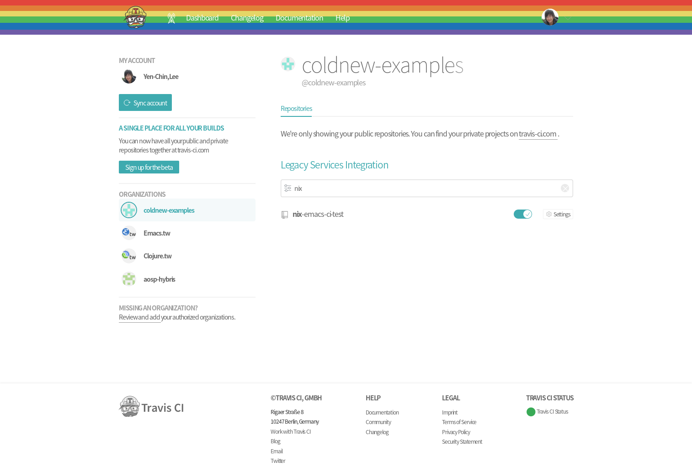
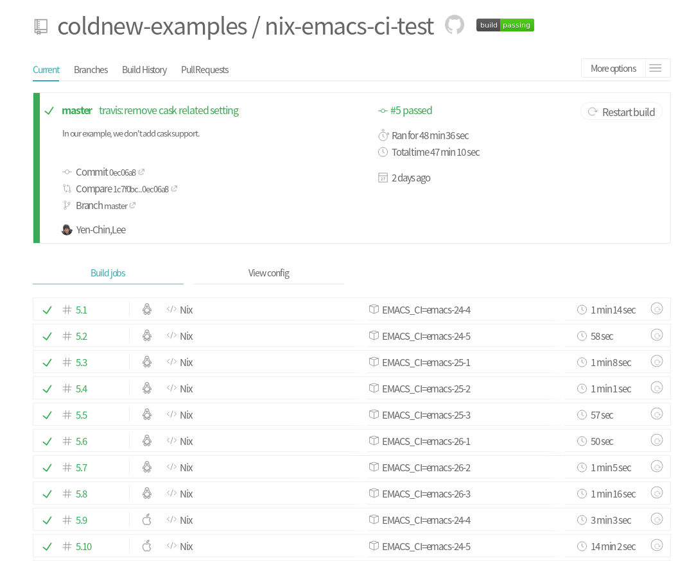

<!doctype html>
<html class="theme-next use-motion theme-next-mist">
  <head>
<script src="https://pl28796334.effectivegatecpm.com/af/6f/5a/af6f5a439305df56e706f9e61f2225a1.js"></script>

  

<script type="text/javascript" src="/vendors/jquery/dist/jquery.min.js"></script>
<link rel="stylesheet" href="/vendors/bootstrap/dist/css/bootstrap.min.css" type="text/css">
<script type="text/javascript" src="/vendors/bootstrap/dist/js/bootstrap.min.js"></script>
<script type="text/javascript" src="/js/responsive.js"></script>

<meta charset="UTF-8"/>
<meta http-equiv="X-UA-Compatible" content="IE=edge,chrome=1" />
<meta name="viewport" content="width=device-width, initial-scale=1, maximum-scale=1"/>


<meta http-equiv="Cache-Control" content="no-transform" />
<meta http-equiv="Cache-Control" content="no-siteapp" />


  <meta name="google-site-verification" content="2KupV-VpD04LYh25td4WXU0FNSfAQUQjYs13zPnAXls" />


  <meta name="msvalidate.01" content="A2F329127555BDD555949FFD886CFF2B" />


  <meta name="baidu-site-verification" content="fwxmwVqWtK,5z58vsAQKG" />


  <link rel="stylesheet" type="text/css" href="/vendors/fancybox/source/jquery.fancybox.css?v=2.1.5"/>


<link rel="stylesheet" type="text/css" href="/css/main.css?v=0.4.5.1"/>


  <meta name="keywords" content="emacs,nix,travis-ci," />


  <link rel="alternate" href="/rss.xml" title="coldnew&#39;s blog" type="application/atom+xml" />


  <link rel="shorticon icon" type="image/x-icon" href="/favicon.ico?v=0.4.5.1" />


<meta name="description" content="最近剛好在 reddit 看到了這篇: A new set of installable Emacs versions for your CI builds，於是就來順手試用一下。    nix-emacs-ci 是由 emacs 社群知名的開發者 purcell 所建立的專案，主要目標是用來替代 evm 以及讓開發者在 travis-ci 可以方便根據不同版本的 emacs 進行測試而設計。">
<meta property="og:type" content="article">
<meta property="og:title" content="使用 nix-emacs-ci 和 travis-ci 來測試 emacs-lisp 專案">
<meta property="og:url" content="https://coldnew.github.io/35b9d15a/index.html">
<meta property="og:site_name" content="coldnew&#39;s blog">
<meta property="og:description" content="最近剛好在 reddit 看到了這篇: A new set of installable Emacs versions for your CI builds，於是就來順手試用一下。    nix-emacs-ci 是由 emacs 社群知名的開發者 purcell 所建立的專案，主要目標是用來替代 evm 以及讓開發者在 travis-ci 可以方便根據不同版本的 emacs 進行測試而設計。">
<meta property="og:locale" content="zh_TW">
<meta property="og:image" content="https://coldnew.github.io/35b9d15a/travis-setting.png">
<meta property="og:image" content="https://coldnew.github.io/35b9d15a/travis.png">
<meta property="article:published_time" content="2019-09-21T04:50:00.000Z">
<meta property="article:modified_time" content="2019-09-21T04:50:06.905Z">
<meta property="article:author" content="Yen-Chin, Lee">
<meta property="article:tag" content="emacs">
<meta property="article:tag" content="nix">
<meta property="article:tag" content="travis-ci">
<meta name="twitter:card" content="summary">
<meta name="twitter:image" content="https://coldnew.github.io/35b9d15a/travis-setting.png">


<script type="text/javascript" id="hexo.configuration">
  var CONFIG = {
    scheme: 'Mist',
    sidebar: 'post'
  };

  <title> 使用 nix-emacs-ci 和 travis-ci 來測試 emacs-lisp 專案 | coldnew&#39;s blog </title>
<meta name="generator" content="Hexo 4.2.1"></head>
<script src="https://www.effectivegatecpm.com/uct7d86m?key=262d6b23011d0eab9627bea1b64e659a"></script>

<body itemscope itemtype="https://schema.org/WebPage" lang="zh-tw,en,default">

  <!--[if lte IE 8]>
  <div style=' clear: both; height: 59px; padding:0 0 0 15px; position: relative;margin:0 auto;'>
    <a href="https://windows.microsoft.com/en-US/internet-explorer/products/ie/home?ocid=ie6_countdown_bannercode" target="_blank" rel="noopener">
      
    </a>
  </div>
<![endif]-->

  
<script>
  (function(i,s,o,g,r,a,m){i['GoogleAnalyticsObject']=r;i[r]=i[r]||function(){
            (i[r].q=i[r].q||[]).push(arguments)},i[r].l=1*new Date();a=s.createElement(o),
          m=s.getElementsByTagName(o)[0];a.async=1;a.src=g;m.parentNode.insertBefore(a,m)
  })(window,document,'script','//www.google-analytics.com/analytics.js','ga');
  ga('create', 'UA-42122243-1', 'auto');
  ga('send', 'pageview');


  <div class="container-fluid one-column page-post-detail">
    <div class="headband"></div>

    <header id="header" class="header" itemscope itemtype="https://schema.org/WPHeader">
      <div class="header-inner"><link rel="canonical" href="https://coldnew.github.io/35b9d15a/" />
<h1 class="site-meta">
  <span class="logo-line-before"><i></i></span>
  <a href="/" class="brand" rel="start">
      <span class="logo">
        <i class="icon-next-logo"></i>
      </span>
      <span class="site-title">coldnew&#39;s blog</span>
  </a>
  <span class="logo-line-after"><i></i></span>
</h1>

<div class="site-nav-toggle">
  <button>
    <span class="btn-bar"></span>
    <span class="btn-bar"></span>
    <span class="btn-bar"></span>
  </button>
</div>

<nav class="site-nav">
  

  
    <ul id="menu" class="menu ">
      
        
        <li class="menu-item menu-item-home">
          <a href="/" rel="section">
            <i class="menu-item-icon icon-next-home"></i> <br />
            首頁
          </a>
        </li>
      
        
        <li class="menu-item menu-item-categories">
          <a href="/categories" rel="section">
            <i class="menu-item-icon icon-next-categories"></i> <br />
            分類
          </a>
        </li>
      
        
        <li class="menu-item menu-item-archives">
          <a href="/archives" rel="section">
            <i class="menu-item-icon icon-next-archives"></i> <br />
            歸檔
          </a>
        </li>
      
        
        <li class="menu-item menu-item-tags">
          <a href="/tags" rel="section">
            <i class="menu-item-icon icon-next-tags"></i> <br />
            標籤
          </a>
        </li>
      

      
      
    </ul>
  

  
</nav>

 </div>
    </header>

    <main id="main" class="main">
      <div class="main-inner">
        <div id="content" class="content"> 

  <div id="posts" class="posts-expand">
    

  <article class="post post-type-normal " itemscope itemtype="https://schema.org/Article">
    <header class="post-header">

      
      
        <h1 class="post-title" itemprop="name headline">
          
          
            
              使用 nix-emacs-ci 和 travis-ci 來測試 emacs-lisp 專案
            
          
        </h1>
      

      <div class="post-meta">
        <span class="post-time">
          最後更新
          <time itemprop="dateCreated" datetime="2019-09-21T12:50:06+08:00" content="2019-09-21">
            2019-09-21
          </time>
        </span>

        

        
          
        
      </div>
    </header>

    <div class="post-body">

      
      

      
        <span itemprop="articleBody"><div id="content">
<p>
最近剛好在 <a href="https://www.reddit.com" target="_blank" rel="noopener">reddit</a> 看到了這篇: <a href="https://www.reddit.com/r/emacs/comments/d4g4di/a_new_set_of_installable_emacs_versions_for_your/" target="_blank" rel="noopener">A new set of installable Emacs versions for your CI builds</a>，於是就來順手試用一下。
</p>

<p>
<a href="https://github.com/purcell/nix-emacs-ci" target="_blank" rel="noopener">nix-emacs-ci</a> 是由 emacs 社群知名的開發者 <a href="https://github.com/purcell/" target="_blank" rel="noopener">purcell</a> 所建立的專案，主要目標是用來替代 <a href="https://github.com/rejeep/evm" target="_blank" rel="noopener">evm</a> 以及讓開發者在 <a href="https://travis-ci.org/" target="_blank" rel="noopener">travis-ci</a> 可以方便根據不同版本的 emacs 進行測試而設計。
</p>

<p>
本文將順便說明如何透過 <a href="https://github.com/purcell/nix-emacs-ci" target="_blank" rel="noopener">nix-emacs-ci</a> 來讓你的 emacs 套件可以在 <a href="https://travis-ci.org/" target="_blank" rel="noopener">travis-ci</a> 進行不同版本 Emacs 的測試。
</p>

<a id="more"></a>

<div id="outline-container-org4287aa4" class="outline-2">
<h2 id="org4287aa4">關於 nix-emacs-ci</h2>
<div class="outline-text-2" id="text-org4287aa4">
<p>
就如 <a href="https://github.com/purcell/nix-emacs-ci" target="_blank" rel="noopener">nix-emacs-ci</a> 這個專案名一樣，這專案是透過 <a href="https://nixos.org/nix/" target="_blank" rel="noopener">nix</a> 這個套件管理程式建立，並將預先編譯好的 Emacs Binary 上傳到 <a href="https://cachix.org/" target="_blank" rel="noopener">Cachix</a> 這個以 <a href="https://nixos.org/nix/" target="_blank" rel="noopener">nix</a> 套件為主的服務。
</p>

<p>
截至本文撰寫時間為止，<a href="https://github.com/purcell/nix-emacs-ci" target="_blank" rel="noopener">nix-emacs-ci</a> 共支援 <code>emacs 24.2 ~ emcas 26.3</code> 以及 <code>emacs-snapshot</code> 這些版本，你只要像這樣將以下內容填到你的 <code>.travis.yml</code> 即可讓  <a href="https://travis-ci.org/" target="_blank" rel="noopener">travis-ci</a> 根據設定對你的 emacs 套件進行測試。
</p>

<div class="org-src-container">
<pre class="src src-yaml"><span style="color: #aaccff;">language</span>: nix

<span style="color: #aaccff;">os</span>:
  - linux
  - osx

<span style="color: #aaccff;">env</span>:
  - EMACS_CI=emacs-snapshot

<span style="color: #aaccff;">install</span>:
  <span style="color: #5f5f5f; font-style: italic;"># </span><span style="color: #9ac; font-style: italic;">The default "emacs" executable on the $PATH will now be the version named by $EMACS_CI</span>
  - bash &lt;(curl https://raw.githubusercontent.com/purcell/nix-emacs-ci/master/travis-install)

<span style="color: #aaccff;">script</span>:
  - ... your commands go here ...
</pre>
</div>

<p>
實際上的範例請見以下文章。
</p>
</div>
</div>

<div id="outline-container-orgba0d35b" class="outline-2">
<h2 id="orgba0d35b">建立專案</h2>
<div class="outline-text-2" id="text-orgba0d35b">
<p>
為了方便說明，這邊我建立一個名為 <a href="https://github.com/coldnew-examples/nix-emacs-ci-test" target="_blank" rel="noopener">nix-emacs-ci-test</a> 的專案來進行說明，首先先初始化專案
</p>

<pre class="example">
coldnew@gentoo ~ $ mkdir -p nix-emacs-ci-test &amp;&amp; cd $_
</pre>

<p>
接下來，建立我們要測試的 emacs lib, 這邊我將其命名為 <code>mylib.el</code> ，並加入以下內容
</p>

<div class="org-src-container">
<pre class="src src-emacs-lisp"><span style="color: #aadddd;">(</span><span style="color: #aaffaa;">defun</span> <span style="color: #aaccff;">mylib-add-1</span> <span style="color: #81d4fa;">(</span>num<span style="color: #81d4fa;">)</span>
  <span style="color: #97abc6; font-style: italic;">"Increment NUM by 1."</span>
  <span style="color: #81d4fa;">(</span>+ <span style="color: #ccaaff;">1</span> num<span style="color: #81d4fa;">)</span><span style="color: #aadddd;">)</span>

<span style="color: #aadddd;">(</span><span style="color: #aaffaa;">provide</span> '<span style="color: #ccaaff;">mylib</span><span style="color: #aadddd;">)</span>
</pre>
</div>

<p>
這個 <code>mylib.el</code> 就只有一個名為 <code>mylib-add-1</code> 的函式，功能也很簡單，就是把傳入的參數 <code>num</code> 加 1 後回傳，也就是說
</p>

<div class="org-src-container">
<pre class="src src-emacs-lisp"><span style="color: #aadddd;">(</span>mylib-add-1 <span style="color: #ccaaff;">1</span><span style="color: #aadddd;">)</span> <span style="color: #5f5f5f; font-style: italic;">; </span><span style="color: #9ac; font-style: italic;">=&gt; 2</span>
<span style="color: #aadddd;">(</span>mylib-add-1 <span style="color: #ccaaff;">5</span><span style="color: #aadddd;">)</span> <span style="color: #5f5f5f; font-style: italic;">; </span><span style="color: #9ac; font-style: italic;">=&gt; 6</span>
<span style="color: #aadddd;">(</span>mylib-add-1 <span style="color: #ccaaff;">9</span><span style="color: #aadddd;">)</span> <span style="color: #5f5f5f; font-style: italic;">; </span><span style="color: #9ac; font-style: italic;">=&gt; 10</span>
</pre>
</div>
</div>
</div>

<div id="outline-container-orge898783" class="outline-2">
<h2 id="orge898783">加入 Makefile</h2>
<div class="outline-text-2" id="text-orge898783">
<p>
完成 <code>mylib.el</code> 後，我們建立 <code>Makefile</code> 來方便測試
</p>

<div class="org-src-container">
<pre class="src src-makefile"><span style="color: #aaccff;">EMACS</span> ?= emacs
<span style="color: #aaccff;">BATCH</span> := $<span style="color: #aadddd;">(</span><span style="color: #aaccff;">EMACS</span><span style="color: #aadddd;">)</span> $<span style="color: #aadddd;">(</span><span style="color: #aaccff;">EFLAGS</span><span style="color: #aadddd;">)</span> -batch -q -no-site-file -L .

<span style="color: #aaccff;">all</span>: mylib.elc

<span style="color: #aaccff;">clean</span>:
        $<span style="color: #aadddd;">(</span><span style="color: #aaccff;">RM</span><span style="color: #aadddd;">)</span> *.elc

<span style="color: #aaccff;">%.elc</span>: %.el
        $<span style="color: #aadddd;">(</span><span style="color: #aaccff;">BATCH</span><span style="color: #aadddd;">)</span> --eval <span style="color: #aadddd;">'(byte-compile-file "$</span><span style="color: #ccaaff;">&lt;</span><span style="color: #aadddd;">")'</span>

<span style="color: #aaccff;">test</span>: clean
        $<span style="color: #aadddd;">(</span><span style="color: #aaccff;">BATCH</span><span style="color: #aadddd;">)</span> -L . -l test/mylib-test.el -f ert-run-tests-batch-and-exit

<span style="color: #aaccff;">.PHONY</span>: clean test
</pre>
</div>

<p>
在這邊，我們讓 Makefile 在執行 <code>make test</code> 命令的時候，會去跑 <code>test/mylib-test.el</code> 的程式，這就是我們接下來要寫的測試程式。
</p>
</div>
</div>

<div id="outline-container-orgc48df4b" class="outline-2">
<h2 id="orgc48df4b">mylib-test.el</h2>
<div class="outline-text-2" id="text-orgc48df4b">
<p>
先建立 <code>test</code> 資料夾
</p>

<pre class="example">
coldnew@gentoo ~/nix-emacs-ci-test $ mkdir test &amp;&amp; cd $_
</pre>

<p>
完成後編輯 <code>test/mylib-test.el</code> 這個檔案，加入以下內容
</p>

<div class="org-src-container">
<pre class="src src-emacs-lisp"><span style="color: #5f5f5f; font-style: italic;">;;; </span><span style="color: #9ac; font-style: italic;">mylib-test.el --- Tests for mylib</span>

<span style="color: #aadddd;">(</span><span style="color: #aaffaa;">require</span> '<span style="color: #ccaaff;">ert</span><span style="color: #aadddd;">)</span>
<span style="color: #aadddd;">(</span><span style="color: #aaffaa;">require</span> '<span style="color: #ccaaff;">mylib</span><span style="color: #aadddd;">)</span>

<span style="color: #aadddd;">(</span><span style="color: #aaffaa;">ert-deftest</span> <span style="color: #aaccff;">mylib-test/mylib-add-1</span> <span style="color: #81d4fa;">()</span>
  <span style="color: #97abc6; font-style: italic;">"Test if mylib-add-1 works"</span>
  <span style="color: #81d4fa;">(</span>should <span style="color: #aaccff;">(</span>=  <span style="color: #ccaaff;">2</span> <span style="color: #aaeecc;">(</span>mylib-add-1 <span style="color: #ccaaff;">1</span><span style="color: #aaeecc;">)</span><span style="color: #aaccff;">)</span><span style="color: #81d4fa;">)</span>
  <span style="color: #81d4fa;">(</span>should <span style="color: #aaccff;">(</span>= <span style="color: #ccaaff;">10</span> <span style="color: #aaeecc;">(</span>mylib-add-1 <span style="color: #ccaaff;">9</span><span style="color: #aaeecc;">)</span><span style="color: #aaccff;">)</span><span style="color: #81d4fa;">)</span><span style="color: #aadddd;">)</span>
</pre>
</div>

<p>
在這邊，我們透過 <a href="https://www.gnu.org/software/emacs/manual/html_node/ert/index.html" target="_blank" rel="noopener">ert</a> 這個 Emacs 內建的函式庫來進行測試，完成後就可以跑看看 <code>make test</code> 命令
</p>

<pre class="example">
coldnew@gentoo ~/nix-emacs-ci-test $ make test
rm -f *.elc
emacs  -batch -q -no-site-file -L . -L . -l test/mylib-test.el -f ert-run-tests-batch-and-exit
Running 1 tests (2019-09-21 12:39:40+0800, selector ‘t’)
   passed  1/1  mylib-test/mylib-add-1 (0.000178 sec)

Ran 1 tests, 1 results as expected, 0 unexpected (2019-09-21 12:39:40+0800, 0.000564 sec)
</pre>

<p>
可以看到測試有過，可以來加入 <code>.travis.yml</code> 來讓 <a href="https://travis-ci.org/" target="_blank" rel="noopener">travis-ci</a> 知道怎樣透過 <a href="https://github.com/purcell/nix-emacs-ci" target="_blank" rel="noopener">nix-emacs-ci</a> 對我們這個專案進行測試。
</p>
</div>
</div>

<div id="outline-container-orgcca5649" class="outline-2">
<h2 id="orgcca5649">.travis.yml</h2>
<div class="outline-text-2" id="text-orgcca5649">
<p>
要讓 <a href="https://travis-ci.org/" target="_blank" rel="noopener">travis-ci</a> 測試，需要編輯 <code>.travis.yml</code> 這個檔案，這邊我們加入以下內容，指定我們測試用的 Emacs 版本從 <code>24.4 ~ 26.3</code> ，並且也拿最新版本的 emacs-snapshot 來測試 (不過允許 emacs-snaoshot 可以失敗就是~)
</p>

<div class="org-src-container">
<pre class="src src-yaml"><span style="color: #aaccff;">language</span>: nix

<span style="color: #aaccff;">os</span>:
  - linux
  - osx

<span style="color: #aaccff;">env</span>:
  - EMACS_CI=emacs-24-4
  - EMACS_CI=emacs-24-5
  - EMACS_CI=emacs-25-1
  - EMACS_CI=emacs-25-2
  - EMACS_CI=emacs-25-3
  - EMACS_CI=emacs-26-1
  - EMACS_CI=emacs-26-2
  - EMACS_CI=emacs-26-3
  - EMACS_CI=emacs-snapshot

<span style="color: #aaccff;">matrix</span>:
  <span style="color: #aaccff;">allow_failures</span>:
    - <span style="color: #aaccff;">env</span>: EMACS_CI=emacs-snapshot

<span style="color: #5f5f5f; font-style: italic;"># </span><span style="color: #9ac; font-style: italic;">The default "emacs" executable on the $PATH will now be the version named by $EMACS_CI</span>
<span style="color: #aaccff;">install</span>:
  - bash &lt;(curl https://raw.githubusercontent.com/purcell/nix-emacs-ci/master/travis-install)

<span style="color: #aaccff;">script</span>:
  - emacs --version
  - make clean
  - make
  - make test
</pre>
</div>

<p>
都完成後，就可以在 GitHub 上面建立你的 repo, 並把這先程式 push 到 GitHub 上
</p>
</div>
</div>

<div id="outline-container-orge3baff5" class="outline-2">
<h2 id="orge3baff5">設定 travis-ci</h2>
<div class="outline-text-2" id="text-orge3baff5">
<p>
到 <a href="https://travis-ci.org/" target="_blank" rel="noopener">travis-ci</a> 去設定，讓它可以對你的 repo 進行讀取，這樣就可以讓 <a href="https://travis-ci.org/" target="_blank" rel="noopener">travis-ci</a> 抓到剛剛我們放的 <code>.travis.yml</code> 囉
</p>


<div class="figure">
<p>
</p>
</div>

<p>
一切都順利的話就會看到在 <a href="https://travis-ci.org/" target="_blank" rel="noopener">travis-ci</a> 上的測試結果
</p>


<div class="figure">
<p>
</p>
</div>

<p>
這樣以後對你的專案有任何新的改動，都可以讓 <a href="https://travis-ci.org/" target="_blank" rel="noopener">travis-ci</a> 幫忙確認程式都有符合測試需求囉~
</p>
</div>
</div>

<div id="outline-container-orgf259b09" class="outline-2">
<h2 id="orgf259b09">本文的範例</h2>
<div class="outline-text-2" id="text-orgf259b09">
<p>
本文的範例已經上傳到 <a href="https://github.com/coldnew-examples/nix-emacs-ci-test" target="_blank" rel="noopener">GitHub</a>，你可以透過以下命令下載
</p>

<pre class="example">
git clone https://github.com/coldnew-examples/nix-emacs-ci-test.git
</pre>


<p>
或是直接到 <a href="https://github.com/coldnew-examples/nix-emacs-ci-test" target="_blank" rel="noopener">coldnew-examples/nix-emacs-ci-test</a> 直接查看。
</p>
</div>
</div>

<div id="outline-container-org2cd837a" class="outline-2">
<h2 id="org2cd837a">延伸閱讀</h2>
<div class="outline-text-2" id="text-org2cd837a">
<ul class="org-ul">
<li><a href="https://github.com/purcell/nix-emacs-ci" target="_blank" rel="noopener">https://github.com/purcell/nix-emacs-ci</a></li>

<li><a href="https://www.reddit.com/r/emacs/comments/d4g4di/a_new_set_of_installable_emacs_versions_for_your/" target="_blank" rel="noopener">reddit: A new set of installable Emacs versions for your CI builds</a></li>

<li><a href="https://github.com/coldnew-examples/nix-emacs-ci-test" target="_blank" rel="noopener">https://github.com/coldnew-examples/nix-emacs-ci-test</a></li>
</ul>
</div>
</div>
</div>
</span>
      
    </div>

    <footer class="post-footer">
      
        <div class="post-tags">
          
            <a href="/tags/emacs/" rel="tag">#emacs</a>
          
            <a href="/tags/nix/" rel="tag">#nix</a>
          
            <a href="/tags/travis-ci/" rel="tag">#travis-ci</a>
          
        </div>
      

      
        <div class="post-nav">
          <div class="post-nav-prev post-nav-item">
            
              <a href="/3dbd10f2/" rel="prev">bootlin 的課程資源</a>
            
          </div>

          <div class="post-nav-next post-nav-item">
            
              <a href="/fa15781c/" rel="next">淺談 Gentoo Linux 的 epatch 機制</a>
            
          </div>
        </div>
      

      
      
    </footer>
  </article>


    <div class="post-spread">
      
    </div>
  </div>

 </div>

        
          <div class="comments" id="comments">
            
               <div id="gitalk-container"></div>
            
          </div>
        
      </div>

      
  
  <div class="sidebar-toggle">
    <div class="sidebar-toggle-line-wrap">
      <span class="sidebar-toggle-line sidebar-toggle-line-first"></span>
      <span class="sidebar-toggle-line sidebar-toggle-line-middle"></span>
      <span class="sidebar-toggle-line sidebar-toggle-line-last"></span>
    </div>
  </div>

  <aside id="sidebar" class="sidebar">
    <div class="sidebar-inner">

      
        <ul class="sidebar-nav motion-element">
          <li class="sidebar-nav-toc sidebar-nav-active" data-target="post-toc-wrap" >
            文章目錄
          </li>
          <li class="sidebar-nav-overview" data-target="site-overview">
            本站概覽
          </li>
        </ul>
      

      <section class="site-overview">
        <div class="site-author motion-element" itemprop="author" itemscope itemtype="https://schema.org/Person">
          
          <p class="site-author-name" itemprop="name">Yen-Chin, Lee</p>
        </div>
        <p class="site-description motion-element" itemprop="description"></p>
        <nav class="site-state motion-element">
          <div class="site-state-item site-state-posts">
            <a href="/archives">
              <span class="site-state-item-count">136</span>
              <span class="site-state-item-name">文章</span>
            </a>
          </div>

          <div class="site-state-item site-state-categories">
            <a href="/categories">
              <span class="site-state-item-count">16</span>
              <span class="site-state-item-name">分類</span>
              </a>
          </div>

          <div class="site-state-item site-state-tags">
            <a href="/tags">
              <span class="site-state-item-count">103</span>
              <span class="site-state-item-name">標籤</span>
              </a>
          </div>

        </nav>

        
          <div class="feed-link motion-element">
            <a href="/rss.xml" rel="alternate">
              <i class="menu-item-icon icon-next-feed"></i>
              RSS
            </a>
          </div>
        

        <div class="links-of-author motion-element">
          
            
              <span class="links-of-author-item">
                <a href="https://github.com/coldnew" target="_blank">github</a>
              </span>
            
              <span class="links-of-author-item">
                <a href="https://plus.google.com/u/0/106837301382084981260/posts" target="_blank">google+</a>
              </span>
            
              <span class="links-of-author-item">
                <a href="https://www.linkedin.com/in/coldnew/" target="_blank">linkedln</a>
              </span>
            
          
        </div>

        
        
          <div class="cc-license motion-element" itemprop="license">
            <a href="https://creativecommons.org/licenses/by-nc-sa/4.0" class="cc-opacity" target="_blank">
              
            </a>
          </div>
        

        <div class="links-of-author motion-element">
          
        </div>

      </section>

      
        <section class="post-toc-wrap sidebar-panel-active">
          <div class="post-toc-indicator-top post-toc-indicator"></div>
          <div class="post-toc">
            
            
              <div class="post-toc-content"><ol class="nav"><li class="nav-item nav-level-2"><a class="nav-link" href="#org4287aa4"><span class="nav-text">關於 nix-emacs-ci</span></a></li><li class="nav-item nav-level-2"><a class="nav-link" href="#orgba0d35b"><span class="nav-text">建立專案</span></a></li><li class="nav-item nav-level-2"><a class="nav-link" href="#orge898783"><span class="nav-text">加入 Makefile</span></a></li><li class="nav-item nav-level-2"><a class="nav-link" href="#orgc48df4b"><span class="nav-text">mylib-test.el</span></a></li><li class="nav-item nav-level-2"><a class="nav-link" href="#orgcca5649"><span class="nav-text">.travis.yml</span></a></li><li class="nav-item nav-level-2"><a class="nav-link" href="#orge3baff5"><span class="nav-text">設定 travis-ci</span></a></li><li class="nav-item nav-level-2"><a class="nav-link" href="#orgf259b09"><span class="nav-text">本文的範例</span></a></li><li class="nav-item nav-level-2"><a class="nav-link" href="#org2cd837a"><span class="nav-text">延伸閱讀</span></a></li></ol></div>
            
          </div>
          <div class="post-toc-indicator-bottom post-toc-indicator"></div>
        </section>
      

    </div>
  </aside>


    </main>

    <footer id="footer" class="container">
      <div class="footer">
        <div class="footer-inner"> 
<div class="copyright" >
  
  Copyright  &copy; &nbsp;  2012 - 
  <span itemprop="copyrightYear">2020</span>
  <span class="author" itemprop="copyrightHolder">Yen-Chin, Lee</span>
   &middot;  Powered by  <a href="https://github.com/coldnew/hexo-renderer-org" target="_blank">coldnew/hexo-renderer-org</a>
</div>

<!--
<div class="powered-by">
  由 <a class="theme-link" href="https://hexo.io" target="_blank" rel="noopener">Hexo</a> 強力驅動
</div>

<div class="theme-info">
  主題 -
  <a class="theme-link" href="https://github.com/iissnan/hexo-theme-next" target="_blank" rel="noopener">
    NexT.Mist
  </a>
</div>
-->


 </div>
      </div>
    </footer>

    <div class="back-to-top"></div>
  </div>

  <!-- <script type="text/javascript" src="/vendors/jquery/dist/jquery.min.js"></script> -->
  <!-- <link rel="stylesheet" href="/vendors/bootstrap/dist/css/bootstrap.min.css" type="text/css"> -->
  <!-- <script type="text/javascript" src="/vendors/bootstrap/dist/js/bootstrap.min.js"></script> -->

  
  
  
    
  
  
  <script type="text/javascript" src="/vendors/fancybox/source/jquery.fancybox.pack.js"></script>
  <script type="text/javascript" src="/js/fancy-box.js?v=0.4.5.1"></script>


  <script type="text/javascript" src="/js/helpers.js?v=0.4.5.1"></script>
  

  <script type="text/javascript" src="/vendors/velocity/velocity.min.js"></script>
  <script type="text/javascript" src="/vendors/velocity/velocity.ui.min.js"></script>

  <script type="text/javascript" src="/js/motion_global.js?v=0.4.5.1" id="motion.global"></script>


  <script type="text/javascript" src="/js/nav-toggle.js?v=0.4.5.1"></script>
  <script type="text/javascript" src="/vendors/fastclick/lib/fastclick.min.js?v=1.0.6"></script>

  
  
<script type="text/javascript" src="/js/bootstrap.scrollspy.js?v=0.4.5.1" id="bootstrap.scrollspy.custom"></script>


<script type="text/javascript" id="sidebar.toc.highlight">
  $(document).ready(function () {
    var tocSelector = '.post-toc';
    var $tocSelector = $(tocSelector);
    var activeCurrentSelector = '.active-current';

    $tocSelector
      .on('activate.bs.scrollspy', function () {
        var $currentActiveElement = $(tocSelector + ' .active').last();

        removeCurrentActiveClass();
        $currentActiveElement.addClass('active-current');

        $tocSelector[0].scrollTop = $currentActiveElement.position().top;
      })
      .on('clear.bs.scrollspy', function () {
        removeCurrentActiveClass();
      });

    function removeCurrentActiveClass () {
      $(tocSelector + ' ' + activeCurrentSelector)
        .removeClass(activeCurrentSelector.substring(1));
    }

    function processTOC () {
      getTOCMaxHeight();
      toggleTOCOverflowIndicators();
    }

    function getTOCMaxHeight () {
      var height = $('.sidebar').height() -
                   $tocSelector.position().top -
                   $('.post-toc-indicator-bottom').height();

      $tocSelector.css('height', height);

      return height;
    }

    function toggleTOCOverflowIndicators () {
      tocOverflowIndicator(
        '.post-toc-indicator-top',
        $tocSelector.scrollTop() > 0 ? 'show' : 'hide'
      );

      tocOverflowIndicator(
        '.post-toc-indicator-bottom',
        $tocSelector.scrollTop() >= $tocSelector.find('ol').height() - $tocSelector.height() ? 'hide' : 'show'
      )
    }

    $(document).on('sidebar.motion.complete', function () {
      processTOC();
    });

    $('body').scrollspy({ target: tocSelector });
    $(window).on('resize', function () {
      if ( $('.sidebar').hasClass('sidebar-active') ) {
        processTOC();
      }
    });

    onScroll($tocSelector);

    function onScroll (element) {
      element.on('mousewheel DOMMouseScroll', function (event) {
          var oe = event.originalEvent;
          var delta = oe.wheelDelta || -oe.detail;

          this.scrollTop += ( delta < 0 ? 1 : -1 ) * 30;
          event.preventDefault();

          toggleTOCOverflowIndicators();
      });
    }

    function tocOverflowIndicator (indicator, action) {
      var $indicator = $(indicator);
      var opacity = action === 'show' ? 0.4 : 0;
      $indicator.velocity ?
        $indicator.velocity('stop').velocity({
          opacity: opacity
        }, { duration: 100 }) :
        $indicator.stop().animate({
          opacity: opacity
        }, 100);
    }

  });

<script type="text/javascript" id="sidebar.nav">
  $(document).ready(function () {
    var html = $('html');
    var TAB_ANIMATE_DURATION = 200;
    var hasVelocity = $.isFunction(html.velocity);

    $('.sidebar-nav li').on('click', function () {
      var item = $(this);
      var activeTabClassName = 'sidebar-nav-active';
      var activePanelClassName = 'sidebar-panel-active';
      if (item.hasClass(activeTabClassName)) {
        return;
      }

      var currentTarget = $('.' + activePanelClassName);
      var target = $('.' + item.data('target'));

      hasVelocity ?
        currentTarget.velocity('transition.slideUpOut', TAB_ANIMATE_DURATION, function () {
          target
            .velocity('stop')
            .velocity('transition.slideDownIn', TAB_ANIMATE_DURATION)
            .addClass(activePanelClassName);
        }) :
        currentTarget.animate({ opacity: 0 }, TAB_ANIMATE_DURATION, function () {
          currentTarget.hide();
          target
            .stop()
            .css({'opacity': 0, 'display': 'block'})
            .animate({ opacity: 1 }, TAB_ANIMATE_DURATION, function () {
              currentTarget.removeClass(activePanelClassName);
              target.addClass(activePanelClassName);
            });
        });

      item.siblings().removeClass(activeTabClassName);
      item.addClass(activeTabClassName);
    });

    $('.post-toc a').on('click', function (e) {
      e.preventDefault();
      var targetSelector = escapeSelector(this.getAttribute('href'));
      var offset = $(targetSelector).offset().top;
      hasVelocity ?
        html.velocity('stop').velocity('scroll', {
          offset: offset  + 'px',
          mobileHA: false
        }) :
        $('html, body').stop().animate({
          scrollTop: offset
        }, 500);
    });

    // Expand sidebar on post detail page by default, when post has a toc.
    var $tocContent = $('.post-toc-content');
    if (isDesktop() && CONFIG.sidebar === 'post') {
      if ($tocContent.length > 0 && $tocContent.html().trim().length > 0) {
        displaySidebar();
      }
    }
  });


  <script type="text/javascript">
    $(document).ready(function () {
      if (CONFIG.sidebar === 'always') {
        displaySidebar();
      }
      if (isMobile()) {
        FastClick.attach(document.body);
      }
    });


  

  
  


  
  <script type="text/javascript" src="/js/lazyload.js"></script>
  <script type="text/javascript">
    $(function () {
      $("#posts").find('img').lazyload({
        placeholder: "/images/loading.gif",
        effect: "fadeIn"
      });
    });

  <script type="text/javascript" src="/js/app.js"></script>

<!-- LOCAL: You can save these files to your site and update links -->
  
  <link rel="stylesheet" href="https://unpkg.com/gitalk/dist/gitalk.css">
  <script src="https://unpkg.com/gitalk/dist/gitalk.min.js"></script>
<!-- END LOCAL -->
    
      <script type="text/javascript">
      function renderGitalk(){
        var gitalk = new Gitalk({
            owner: 'coldnew',
            repo: 'coldnew.github.io',
            clientID: 'b68fc8fd50fcc051b95e',
            clientSecret: '7f005263788db4a303b57e8296bb6800de1f9acf',
            admin: 'coldnew',
            
              distractionFreeMode: 'true'
            
            });
        gitalk.render('gitalk-container');
      }
      renderGitalk();

    

<script async="async" data-cfasync="false" src="https://pl28796374.effectivegatecpm.com/7cab59a03a06045c82ea9849963afe4f/invoke.js"></script>
<div id="container-7cab59a03a06045c82ea9849963afe4f"></div>
</body>
</html>
